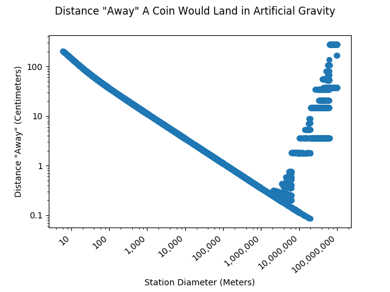
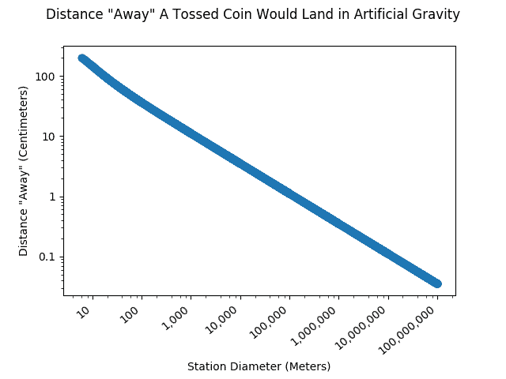

If you were to toss a coin on an artificial gravity space station, where would it end up? If you try my new React computer model, the answer might surprise you! I created this web app to demonstrate the Coriolis effect. This model is clean and powerful, and it teaches a complicated Physics principle in a simple way.
I am very pleased with the result, the product of many months of work. This page is both a model and an article. The article opens when the link is opened; the model is visible when you press the "X" button at the top. The following article describes some of the steps I took to generate it.
Coding goals
The Coriolis effect is an object of fascination of mine. As I stated in my article, the Coriolis effect is an artifact of rotating environments (artificial gravity) that causes objects to move in unexpected directions.
My goal was to take this complicated physics principle and simplify it so that anyone can understand it. I wanted the model to be powerful enough to be able to render whatever throw a user wishes to model. With this objective, I hoped to make the effects of artificial gravity perfectly clear. Furthermore, I wanted the page to be compelling, clean, intuitive, understandable, beautiful, fast, resizable, mobile-friendly, and not glitchy.
Steps to produce the model
This model came about in several stages. This came from a simple idea, though the final result is much more sophisticated and powerful than what I had initially planned.
-
The first stage of this model was to calculate the landing position of the outer space coin toss, so I could quantify how "weird" the toss is. The model needed to compute these coordinates for the viewer. Finding these coordinates involves finding the correct intersection between a line and a circle; the direction of this line is based on physics kinematics equations. This is the math I used.
-
With the landing coordinates, I could calculate the distance the coin would land away from the person; this is the measurable result of the Coriolis effect. I wrote the math into Python code to generate a graph that shows the relationship between the diameter of the station and the "weirdness" of the throw produced by the Coriolis effect. These graphs assume the coin was tossed from four feet up to a total height of 7 feet.
-
I wanted to demonstrate what any throw would look like. Using the line of the coin's movement, I generated a time series of points, allowing me to plot these points on an HTML canvas element.
-
These points needed to be in the thrower's reference frame, not the frame of the outside universe. This is the only way the Coriolis effect would be clearly demonstrated. This required me to translate my series of points into a new set of points that are relative to the thrower. This required writing out more equations and solving a bit of trigonometry.
-
I wrote an article about the Coriolis effect and placed it overtop the model. I wanted this article to be complete, understandable, informative, and entertaining. I filled the article with photoshopped images and homemade giphys, and I made the article interactive with the model.
-
Next, I wanted to improve the model's UI to make it clean and professional. I rewrote the model to utilize the React framework. I added intuitive logarithmic sliders so that it would be easy to change the throw's parameters.
-
I continued debugging the code and adding more use cases.
Some things I encountered while coding
Article Overlay
This React webpage is both a model and an article. I wanted the article to be interactive with the model I was creating! I generated the article as a React component, in Markdown.
I found a fantastic React package, markdown-it-jsx, which allowed me to embed React components directly into Markdown while rendering the text. Without this package, my interactive "Try it!" buttons would be much more difficult to create. markdown-it-jsx converts the Markdown to .jsx, which I then convert into live components using the babel-standalone package after loading. Rendering this way also allows me to completely bybass React's "dangerouslysetinnerhtml" construct, which would be a security vulerability. Other React markdown renderers use this construct to embed the text.
This configuration forced me to change the webpack configuration. This was somewhat tricky because create-react-app, which I was using, automatically configures webpack. "Ejecting" from their config requires more manual upkeep. I wanted to use the "raw-loader" in webpack so I could load markdown files as raw text. This would allow me to process them with markdown-it-jsx. react-app-rewired solved this problem by allowing me to edit the webpack configuration in create-react-app without ejecting.
Insufficient Decimal Places
I discovered that the standard number variable in Python and JavaScript is not accurate enough to calculate the results that I desired. Fifteen decimal places produces glitchy results with large "space stations." Thus, I translated all of my math to work with the Decimal.js JavaScript library and the Python Decimal package. Then, I increased the number of decimal places so I could model larger space stations.
Here is my glitchy graph with the standard number of decimal places. The graph never reaches the correct values for stations that are larger than a million meters:

With additional decimal places:

The Python code I wrote to generate these graphs can be found here.
In JavaScript, the current version of the Decimal.js package does not work with webpack. Thus, in order to use the model with React, I needed to downgrade the package. This issue is discussed here.
A Hidden Feature: Querystrings
Just in case I want to prove to someone else something about the Coriolis effect, I added the ability to open the model page with specific settings in a linkable way. Likely, this feature will never be used. However, here are some of the possible querystrings one could use:
Self-explanatory features:
- diameter
- radius
- percenttime
- startheight
- gravity
- speed (of the coin)
- angle
- units (either ft, feet, imperial, metric, meters, or m)
Other features:
- thrownUp: another hidden feature. Instead of specifying the angle and speed, you can simply tell it how high you would have thrown the coin on Earth (assuming angle 0 if you do not specify, though you are not required to assume that).
- statsMenu: just in case I want to more determinedly prove something, I could have it open the model with the statistics menu open. Possible values: either just "&statsMenu" or "&statsMenu=true".
- inputMenu: since I added a similar feature for the stats menu, it makes sense to add one for the input menu too.
Logarithmic Sliders
I wanted to produce logarithmic sliders for the model's input. This way, it would be intuitive what ranges are acceptable. I found the logic I needed at this site.
My logarithmic ranges needed to include zero. The log of zero does not normally compute! My code uses an offset to ensure the number it calculates the log of is never actually zero.
A Resizeable React canvas
I wanted the model to be compatible with any screen size presented to it. Thus, I needed to create an HTML canvas element that both fills the screen width and resizes. The canvas must receive its with from the properties, not from CSS.
This React plugin initially looked like it would do the job, but it proved useless. Canvas elements must be connected to React refs in order to obtain the drawing context from ReactDOM. This is not possible with functional components, which the react-container-dimensions plugin uses.
I ultimately created an event listener in the Canvas component which triggers a state change when the window is resized. The Canvas then inherits its width and height attributes from the component's state.
Conclusion
This was a very fun, but involved project. I was happy to find some simple solutions to my complex coding problems. I hope I taught you something about artificial gravity!